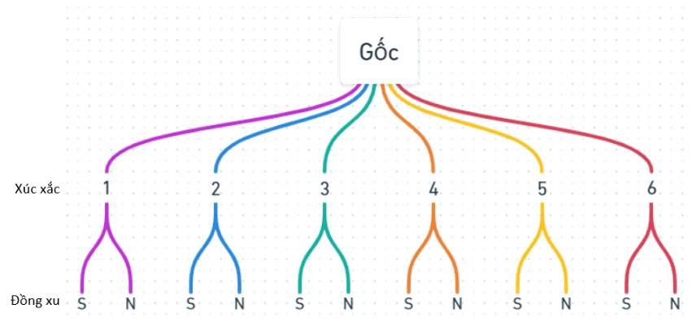

Table of Contents
Downloads
Chapter 1: Introduction and Role of Statistics in Engineering
Xác xuất thống kê sử dụng, thu thập, phân tích data để đưa ra kết luận, giải quyết vấn đề trong lĩnh vực kỹ thuật và công nghệ.
Phương pháp thống kê chính
- Descriptive statistics (thống kê mô tả): Tóm tắt, trình bày dữ liệu bằng các đồ thị, bảng biểu và các đại lượng đặc trưng.
- Inferential statistics (thống kê suy luận): Mô tả, suy đoán tính chất một tổng thể dựa trên 1 mẫu, sử dụng trong việc kiểm định giả thuyết và ước lượng tham số.
Các khái niệm quan trọng
- Data: Thông tin từ các quan sát, đếm, đo lường hoặc phản hồi.
- Population: Tổng thể nghiên cứu (toàn bộ đối tượng quan tâm trong lĩnh vực của bài toán).
- Parameter: Đặc trưng số học mô tả đặc tính của Population.
- Sample: Tập con được chọn từ Population để nghiên cứu.
- Statistic: Đặc trưng số học mô tả đặc tính của Sample, dùng để ước lượng Parameter.
Phân loại dữ liệu
- Qualitative data (dữ liệu định tính): Không thể đo lường bằng số, như màu sắc, loại vật liệu, ...
- Quantitative data (dữ liệu định lượng): Có thể đo lường bằng số, như chiều cao, trọng lượng, ...
- Discrete data (dữ liệu rời rạc): Có thể đếm được, như số lượng sản phẩm lỗi, số lần thử nghiệm, ...
- Continuous data (dữ liệu liên tục): Có thể nhận bất kỳ giá trị nào trong một khoảng, như thời gian, nhiệt độ, ...
Phương pháp thu thập dữ liệu
- Observational study: Nghiên cứu quan sát không can thiệp vào đối tượng.
- Experiment: Nghiên cứu có can thiệp và kiểm soát các yếu tố.
- Retrospective study: Nghiên cứu dựa trên dữ liệu trong quá khứ.
- Prospective study: Nghiên cứu theo dõi đối tượng trong tương lai.
Ứng dụng trong kỹ thuật
- Kiểm soát chất lượng sản phẩm
- Tối ưu hóa quy trình sản xuất
- Phân tích độ tin cậy của hệ thống
- Dự đoán tuổi thọ của thiết bị
- Thiết kế và phân tích thí nghiệm
Ví dụ minh họa
Chapter 2: Probability
2.1 Sample spaces and events (Không gian mẫu và biến cố)
Random experiment (Thí nghiệm ngẫu nhiên)
Là một thực nghiệm để dẫn tới những kết quả khả thi.
Ví dụ: Tung 1 đồng xu
Outcomes: xấp hoặc ngửa
Sample space (Không gian mẫu)
Chứa tất cả những kết quả có khả năng xảy ra, ký hiệu là S.
Ví dụ: Tung đồng xu 2 lần
Outcomes: S = {xấp xấp, xấp ngửa, ngửa ngửa, ngửa xấp}
Tree diagram (Biểu đồ cây)
Không gian mẫu có thể được biểu diễn dạng biểu đồ cây.
Ví dụ: Tung 1 đồng xu sau đó tung tiếp 1 cái xúc xắc
Event (Biến cố)
Tập con của không gian mẫu.
Ví dụ: Tung 1 đồng xu 3 lần, biến cố là đúng 2 lần ra mặt sấp
Set Operations (Phép toán tập hợp)
- Union (hợp): A ∪ B, đúng khi nằm trong A hoặc B hoặc cả hai
- Intersection (giao): A ∩ B, đúng khi nằm trong cả hai
- Complement (phần bù): A', ngược lại với A


Counting techniques (Kỹ thuật đếm)
Multiplication Rule (Quy tắc nhân)
Trong một quy trình gồm nhiều bước, nếu mỗi bước có một số lựa chọn nhất định, tổng số cách thực hiện toàn bộ quy trình được tính bằng tích của số lựa chọn ở mỗi bước.
Permutations (Hoán vị)
Hoán vị đề cập đến số cách sắp xếp một tập hợp các phần tử theo một thứ tự cụ thể. Khi chọn r phần tử từ n phần tử và quan tâm đến thứ tự, ta sử dụng công thức nPr. Điều này thường áp dụng trong các tình huống như sắp xếp người trong một hàng hoặc chọn các vị trí trong một đội.
Combination (Tổ hợp)
Tổ hợp liên quan đến việc chọn một nhóm phần tử từ một tập hợp lớn hơn mà không quan tâm đến thứ tự. Khi chọn r phần tử từ n phần tử mà không cần quan tâm đến thứ tự, ta sử dụng công thức nCr. Điều này thường được áp dụng trong các tình huống như chọn một nhóm người từ một tập hợp lớn hơn để thực hiện một nhiệm vụ, trong đó vai trò cụ thể của từng người không quan trọng.
2.2 Probability
Xác suất của một biến cố trong một phép thử với n khả năng xảy ra như nhau là 1/n.
\[P(A) = \frac{\text{số trường hợp thuận lợi}}{\text{tổng số trường hợp có thể xảy ra}}\]
2.3 Addition Rules
Quy tắc cộng xác suất cho hai sự kiện A và B:
\[P(A \cup B) = P(A) + P(B) - P(A \cap B)\]
Nếu A và B là hai sự kiện độc lập:
\[P(A \cup B) = P(A) + P(B)\]
2.4 Conditional Probability
Xác suất có điều kiện của sự kiện B khi biết A đã xảy ra:
\[P(B|A) = \frac{P(A \cap B)}{P(A)}\]
2.5 Multiplication and Total Probability Rules
Quy tắc nhân xác suất:
\[P(A \cap B) = P(A)P(B|A) = P(B)P(A|B)\]
Quy tắc xác suất toàn phần:
\[P(A) = \sum_{i=1}^n P(A|B_i)P(B_i)\]
Trong đó B₁, B₂, ..., Bₙ là một phân hoạch của không gian mẫu S.
2.6 Bayes' Theorem
Công thức Bayes:
\[P(A|B) = \frac{P(B|A)P(A)}{P(B)}\]
Hoặc dạng tổng quát:
\[P(A_i|B) = \frac{P(B|A_i)P(A_i)}{\sum_{j=1}^n P(B|A_j)P(A_j)}\]
Chapter 3: Discrete Random Variables and Probability Distributions
3.1 Discrete Random Variables
Biến ngẫu nhiên rời rạc (Discrete Random Variables) là một loại biến ngẫu nhiên có thể nhận một số lượng giá trị đếm được hoặc hữu hạn. Nói cách khác, tập hợp các giá trị mà nó có thể nhận là một tập hợp rời rạc, không phải là một khoảng liên tục.
3.2 Probability distributions and Probability Mass Functions
\[f(x_i) = P(X=x_i) \text{ với mọi } i = 1, 2, ... n\]
3.3 Cumulative Distribution Function
\[F(x) = P(X \leq x) = \sum_{x_i \leq x} f(x_i)\]
3.4 Mean and Variance of a Discrete Random Variable
Mean (μ): \[E(X) = \sum x_i \cdot P(X = x_i)\]
Variance (σ²): \[V(X) = E[(X - \mu)^2] = \sum (x_i - \mu)^2 \cdot P(X = x_i)\]
3.5 Discrete Uniform Distribution
\[P(X = x_i) = \frac{1}{n} \text{ với mọi } i = 1, 2, ..., n\]
3.6 Binomial Distribution
\[P(X = x) = \binom{n}{x} p^x (1-p)^{n-x}\]
3.7 Geometric and Negative Binomial Distribution
Geometric: \[P(X = x) = (1-p)^{x-1} \cdot p\]
Negative Binomial: \[P(X = x) = \binom{x-1}{r-1} p^r (1-p)^{x-r}\]
3.8 Hypergeometric Distribution
\[P(X = x) = \frac{\binom{K}{x} \binom{N-K}{n-x}}{\binom{N}{n}}\]
3.9 Poisson Distribution
\[P(X = x) = \frac{e^{-\lambda} \lambda^x}{x!}\]